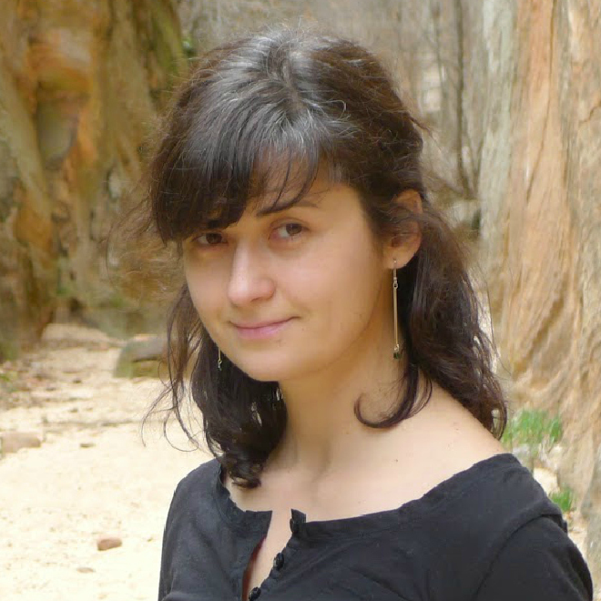
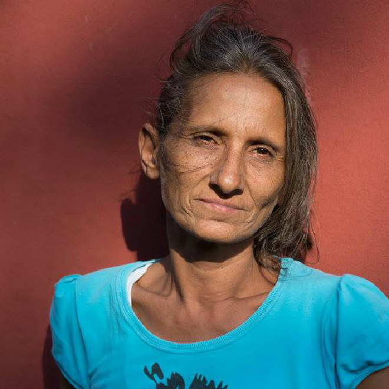
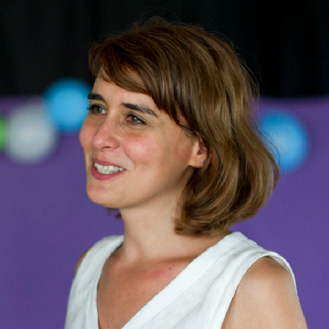
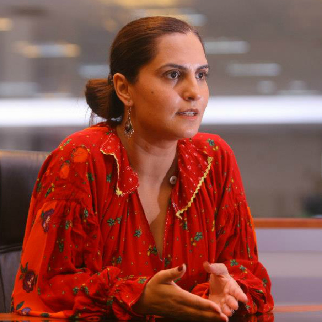

We are a team of educators who support writers and illustrators to create books that reflect the ethnic diversity of Romania, with a focus on our Roma communities.
Gabriela teaches at Brandeis University. She previously taught at Dartmouth College and has international experience through the Institut Français network. Her belief that culture should embrace diversity led her to specialize in Cultural Project Design and Coordination during Master's degree studies at Sorbonne University.
Maria lives in the Ferentari neighborhood and she joined the Alternative Education Club in 2011. She is deeply passionate about non-formal education methods that develop creativity in children and she is always there to help them with their homework. Maria is also involved in remedial education.
Cris has 5 years of experience in the field of educational and cultural cooperation between France and Romania. She worked as a French teacher with Chinese students at the Sun Yat-sen University. Her interest in social action has led her to an internship in the Directorate General of Employment, Social Affairs, and Inclusion at the European Commission.
Magda is an Instructor at the FXB Center for Health and Human Rights at Harvard University. She is the Director of the Roma Program, which focuses on innovative research strategies and critical analysis of scholarly production regarding Roma. Her research spans the rights of Roma children and adolescents, segregation in education, and participatory action research.
The Policy Center for Roma and Minorities is our partner in this project through their Alternative Education Club (AEC). The AEC is a non-formal program started in 2010, which currently engages with over 200 Roma and non-Roma children from Ferentari. Its aim is to support children to break the circle of marginalization, poverty, and hopelessness, through sports and alternative education. We also have a partnership with the Global Shapers Bucharest Hub.
Join our mailing list